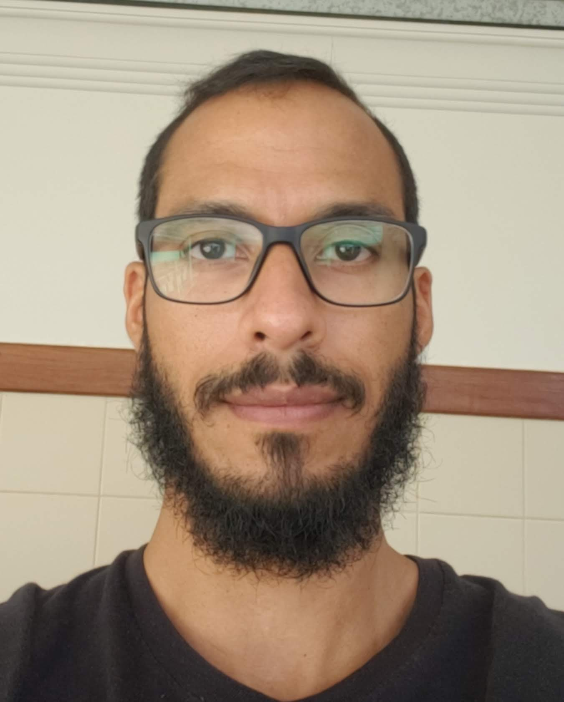

Délio Araujo Varela

DEV Full-stack em formação.(Trybe)
Brasília-DF
- Unix
- Shell
- Git
- GitHub
- HTML
- CSS
Outras Capacitações
- Graducação: Nutrição - Universidade de Brasília - UnB (2008)
- Inglês intermediário
Experiências
- Gerente geral em: Prothus Suplementos Alimentares (2010-2015)
- Nutricionista autônomo (2009-2015)
- Nutricionista esportivo em: Academia Corpo e Saúde (Taguatinga/DF) (2009)
- Intercâmbio: Estados Unidos (nov-2001 a mar-2002)
"A dor é inevitável. O sofrimento é opcional."(Buda)